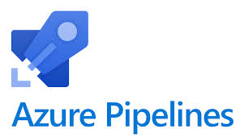

Projects
Automated Infrastructure Deployment with Terraform
Developed an automated pipeline to provision and manage Azure resources using Terraform, integrated with Azure DevOps for continuous deployment.

CI/CD Pipeline Implementation with Azure DevOps
Set up a robust CI/CD pipeline using Azure DevOps, enabling seamless code integration and deployment processes.
